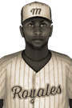

|
|
|  | Durand Is NL Batting Champ Wednesday, September 14th, 1932 Xavier Durand may not have the years of experience that many National Baseball Association stars have, but he's already got a batting title at age 25. The Montreal Royales shortstop captured the National League crown this past season with a .348 average. The star player collected 157 hits, 17 doubles, 5 triples and 6 home runs for the year. In 107 games Durand totaled 50 RBIs and scored 72 runs. |   |